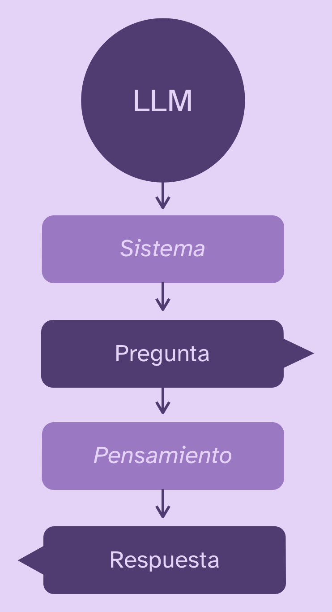

Aumenta el conocimiento de inteligencias artificiales creando un sistema de RAG con R
Conocimiento preciso y especializado basado en documentos gracias a la generación aumentada por recuperación
28/5/2026
La generación aumentada por recuperación o RAG, por sus siglas en inglés (retrieval-augmented generation) es un proceso por medio del cual puedes aumentar o complementar el conocimiento de una inteligencia artificial para que pueda responder preguntas basándose en tus propios documentos sin necesidad de entrenar un modelo nuevo ni de requerir un modelo de lenguaje gigante y caro.
¿Para qué sirve el RAG? Para que cualquier modelo de IA pueda informarse en uno o varios documentos que tú especifiques, y así tenga conocimiento específico de temáticas especializadas. De esta forma, los modelos dejan de depender en los conocimientos de su entrenamiento (que son generales y difusos) y se basan en el conocimiento que tú les proveas para responder.
Cómo funciona el RAG
En términos muy simples, así es el proceso de preguntar algo a un modelo de lenguaje y obtener una respuesta:

Los modelos de IA solamente responden en base a su entrenamiento original, su system prompt (instrucciones generales de funcionamiento), el contexto (preguntas y respuestas anteriores), las herramientas que tengan a mano (buscar en internet, etc.) y lo que les preguntes. Antes de cada respuesta los LLMs “piensan”, pero el concepto de pensamiento es una metáfora para la estrategia de transformar tu pregunta en varias sub-preguntas, responderlas, y luego usar ese contexto para intentar responder mejor.
Al implementar un sistema de RAG, creamos una base de conocimientos a partir de documentos y entregamos al LLM la posibilidad de buscar textos dentro de esa base de conocimientos para que pueda obtener extractos de contenido relevantes a la pregunta, analizarlos, y usarlos para responder.

De esta manera, y si los documentos son pertinentes y completos, la IA recurrirá a los documentos para informarse, por lo que dejará de inventar respuestas a cosas que no sabe.
Poniendo a prueba a la IA
Hagamos una prueba con una inteligencia artificial para evaluar la necesidad de implementar un sistema de RAG.
Los modelos de lenguaje saben muchas cosas, pero no lo saben todo. Y lamentablemente, por razones de diseño de los mismos modelos, su función es responder incluso cuando no tienen idea de lo que hablan.
Probemos el caso de uso de RAG preguntándole a una IA algo que probablemente no sepa.
Primero creamos un chat con R, siguiendo los pasos de este tutorial.
library(ellmer)
chat <- chat_anthropic()
Ahora, pensemos en un una investigación o estudio que hayamos realizado, en mi caso el Estudio de Brechas Comunales, y preguntémosle a la IA algo específico:
chat$chat("¿Qué es el EBC? Responde brevemente")
El EBC es una escala internacional que mide el color de la cerveza basándose en el color del grano de malta utilizado en su elaboración.
Respondió algo nada que ver! 🙄 Preguntemos algo más general:
chat$chat("¿Qué es el Estudio de Brechas Comunales? Responde brevemente")
El Estudio de Brechas Comunales es una herramienta de análisis que identifica y mide las diferencias entre la situación actual de una comunidad y los estándares deseables en servicios básicos e infraestructura.
Eeem… OK? El modelo entrega una respuesta genérica a partir de los conceptos, pero realmente no sabe sobre lo que le estamos preguntando. Podrá convencer a una persona que tampoco sepa nada, pero para alguien que sí sabe, o alguien que requiere información certera, la respuesta es insuficiente. Por eso necesitamos mejorar el conocimiento de la IA de alguna manera!
Tutorial para usar IA desde R

Crear una base de conocimientos
Lo principal en un sistema de generación aumentada por recuperación (RAG) son los documentos que constituyen su base de conocimientos. Estos documentos pueden ser informes, papers, apuntes, capítulos de libros, o cualquier tipo de texto.
Para crear un sistema de RAG en R, usaremos
el paquete {ragnar}.
install.packages("ragnar")
Primero, creamos un almacén de documentos, que es una base de datos donde se guardarán los textos que necesitemos.
library(ragnar)
store <- ragnar_store_create(
location = "documentos.ragnar.duckdb",
embed = NULL
)
{ragnar} crea una base de datos
DuckDB para almacenar los documentos y luego poder encontrarlos para responder.
Mejorar la capacidad de búsqueda de documentos con text embeddings
Al crear el almacén de documentos, el argumento embed es clave, porque configura si queremos usar text embeddings (incrustaciones de texto) o no. Los embeddings son un método que convierte el lenguaje en representaciones numéricas. Esto sirve para que la búsqueda de textos sea mucho mejor, dado que, en vez de buscar coincidencias directas de texto (bici = bicicleta), la búsqueda semántica puede encontrar relaciones entre los significados de las palabras (ciclismo = bicicleta a pesar de no coincidir letra a letra). Esto nos ayuda a que el sistema sea mucho más inteligente, pero al costo de que se requiere un procesamiento previo de todos los textos, y también un cómputo al momento de realizar cada búsqueda. Dependiendo de la situación, realizar este procesamiento puede ser difícil o imposible.
Para usar embeddings
necesitas Ollama instalado en tu computador e instalar un modelo de inscrustaciones como nomic-embed-text:
ollamar::pull("nomic-embed-text")
O bien, encontrar un proveedor de embeddings. Luego usamos la función apropiada en el argumento embed:
library(ragnar)
store <- ragnar_store_create(
location = "documentos.ragnar.duckdb",
embed = \(x) ragnar::embed_ollama(x, model = "nomic-embed-text")
)
Ahora, luego de insertar los documentos en el almacén, se procesarán para permitir búsqueda semántica de los textos.
Sin embargo, si no se usan embeddings se recurre a BM25, un algoritmo de búsqueda que sigue siendo bastante capaz. Personalmente lo he usado con y sin embeddings, y el segundo caso es perfectamente usable.
Agregar documentos a la base de conocimientos
Ya que tenemos el almacén, necesitamos llenarlo con documentos para obtener una base de conocimientos. Los documentos se introducen al almacenamiento con read_as_markdown(), y pueden estar en cualquier formato (PDF, Word, etc.) ya que serán convertidos a formato Markdown.
Esto significa que los documentos ideales para incluir serán documentos Markdown que hayamos revisado y limpiado previamente. El punto más importante aquí es que los documentos tengan una buena estructura de títulos y subtítulos:
# Título del documento
## Capítulo 1
### Concepto 1
Bla bla bla
### Concepto 2
Ble ble ble
Recordemos que la calidad de las respuestas siempre va a depender de la calidad de los datos!
Cargamos un documento:
informe <- read_as_markdown("informe_estudio_brechas_comunales.md")
Ahora tenemos que dividir en secciones más pequeñas (chunks), para que el sistema pueda encontrar las partes más relevantes al momento de responder:
informe_secciones <- markdown_chunk(informe)
Si el documento tiene una buena estructura de subtítulos, cada párrafo de texto se podrá clasificar mejor dentro de su contexto, ayudando a encontrar fragmentos de texto más apropiados.
Si vemos el documento en este paso, se trata de un dataframe de fragmentos de texto, acompañados de los subtítulos de la sección del texto donde se encuentran:
# @document@origin: informe_estudio_brechas_comunales.md
# A tibble: 295 × 4
start end context text
* <int> <int> <chr> <chr>
1 1 1766 "" "# E…
2 659 2541 "# ESTUDIO DE BRECHAS COMUNALES\n## RESUMEN DEL ESTUDIO" "Par…
3 1767 3212 "# ESTUDIO DE BRECHAS COMUNALES\n## RESUMEN DEL ESTUDIO" "Dur…
4 2542 3764 "# ESTUDIO DE BRECHAS COMUNALES\n## RESUMEN DEL ESTUDIO" "A p…
5 3213 4746 "# ESTUDIO DE BRECHAS COMUNALES\n## RESUMEN DEL ESTUDIO" "Ade…
6 3765 5782 "# ESTUDIO DE BRECHAS COMUNALES\n## RESUMEN DEL ESTUDIO" "Adi…
7 4747 6365 "# ESTUDIO DE BRECHAS COMUNALES\n## RESUMEN DEL ESTUDIO" "A p…
8 5783 7186 "# ESTUDIO DE BRECHAS COMUNALES\n## RESUMEN DEL ESTUDIO" "Por…
9 6366 8043 "# ESTUDIO DE BRECHAS COMUNALES\n## OBJETIVOS DEL ESTUDIO" "###…
10 7187 8927 "# ESTUDIO DE BRECHAS COMUNALES\n## BRECHAS Y DISPARIDADES TERRITORIALES A NIV… "No …
# ℹ 285 more rows
# ℹ Use `print(n = ...)` to see more rows
Si queremos incluir más documentos, se repiten los mismos pasos: read_as_markdown() y luego markdown_chunk().
Insertar documentos y construir índice
Con los documentos listos, ahora los insertamos en el almacén de documentos:
ragnar_store_insert(store, informe_secciones)
Repetir por cada documento que tengamos. Una vez terminada la inserción de documentos, creamos el índice de búsqueda para que la base de datos quede lista para usarse:
ragnar_store_build_index(store)
Nuestra base de conocimientos está lista!
Si volvermos a añadir textos al índice, hay que repetir ragnar_store_build_index() para recalcular el índice.
Probar la búsqueda
Podemos verificar que el sistema funciona correctamente haciendo una búsqueda en los documentos.
Primero nos conectamos a la base de conocimientos:
store <- ragnar_store_connect("documentos.ragnar.duckdb", read_only = TRUE)
Ahora hacemos una búsqueda de texto para recuperar (retrieve) textos desde la base con ragnar_retrieve():
respuesta <- ragnar_retrieve(store, "indicador vías para bicicletas")
respuesta$text
[1] "#### Ciclovías
El desarrollo de sistemas de ciclovías en las ciudades genera numerosas
externalidades positivas que contribuyen a mejorar la calidad de vida
de los ciudadanos, promover la sostenibilidad urbana y construir
ciudades más saludables..."
[2] "##### Origen y selección de indicadores:
El levantamiento de información y la selección de los indicadores
incorporados en este estudio, están directamente relacionados a
infraestructura y servicios..."
El sistema encontró correctamente los fragmentos relevantes sobre ciclovías. Esto significa que nuestro almacén de documentos está funcionando! Esta misma operación de pensar en algo, buscarlo en la base de conocimientos y leer el resultado, es lo que hará la IA para mejorar sus respuestas.
Preguntar con RAG
Ahora que tenemos una base de conocimientos, podemos entregársela a un chat de IA para conectar el modelo de lenguaje con nuestro almacén de documentos.
Primero que nada, necesitamos crear un chat nuevo en R:
library(ellmer)
chat <- chat_anthropic(model = "claude-haiku-4-5")
En este punto, el modelo no sabe nada más allá de lo que se le haya entrenado. Ahora usamos ragnar_register_tool_retrieve() para que el modelo pueda consultar los documentos automáticamente cuando lo necesite:
library(ragnar)
# conectarse a la base de conocimientos
store <- ragnar_store_connect("documentos.ragnar.duckdb", read_only = TRUE)
# registrar herramienta con el modelo de IA
ragnar_register_tool_retrieve(
chat,
store,
top_k = 3,
store_description = "Consulta de base de conocimientos sobre el
Estudio de Brechas Comunales (EBC), que contiene
la metodología, marco teórico e interpretación de
resultados del estudio."
)
Esto que hicimos se denomina tool calling, y es el acto de crear herramientas y ponerlas a disposición de modelos de IA. Con esto, el modelo tiene acceso a una herramienta que le permite buscar en los documentos. Cuando le hagamos una pregunta, el modelo decidirá automáticamente si necesita consultar los documentos para responder.
Repitamos la misma pregunta de antes:
chat$chat("¿Qué es el EBC? Responde brevemente")
Antes de responder, la consola muestra lo siguiente:
◯ [tool call] search_store_001(text = c("qué es el Estudio de Brechas Comunales EBC", ...)
● #> [
#> {
#> "origin": "informe_estudio_brechas_comunales.md",
#> "doc_id": 1,
#> "chunk_id": 14,
#> …
Esto significa que la IA decidió que necesitaba usar RAG para responder! Inmediatamente después, el modelo responde:
El Estudio de Brechas Comunales (EBC) es un instrumento que identifica y mide las disparidades territoriales a nivel comunal en la provisión de bienes, servicios e infraestructura pública en Chile.
Su objetivo es diagnosticar dónde se concentran las mayores carencias en cada territorio, permitiendo a los gobiernos:
- Priorizar inversiones públicas de manera más eficiente
- Dirigir recursos hacia las comunas y grupos más afectados
- Diseñar políticas públicas que respondan a necesidades específicas de cada territorio
El estudio abarca múltiples ámbitos como educación, salud, transporte, servicios básicos (agua, electricidad, saneamiento), telecomunicaciones y otros, considerando las características particulares de las comunas urbanas, mixtas y rurales.
Ahora responde mucho mejor! 🥹 El modelo ahora conoce la sigla, y responde basándose en lo que se explica en el documento.
Podemos seguir haciendo preguntas más específicas, y el modelo seguirá consultando los documentos a medida que los necesite para informar sus respuestas:
chat$chat("¿qué indicadores tienen relación a bicicletas?")
Según el EBC, los indicadores con relación a bicicletas se encuentran en el ámbito de Ciclovías y son:
- Cicloinclusión (red de ciclovías bien conectada y estratégicamente ubicada)
- Porcentaje de cobertura de la red de ciclovía sobre la red vial
El 74,4% de las comunas presentan brechas en cicloinclusión, lo que indica deficiencias significativas en infraestructura de ciclovías bien conectada.
El modelo no sólo encontró los indicadores relevantes, sino que también incluyó un dato estadístico del estudio. Todo esto sin haber entrenado ningún modelo nuevo, y usando un modelo relativamente pequeño y económico.
Gracias al RAG, cualquier modelo de lenguaje puede responder preguntas especializadas basándose en tus propios documentos, sin inventar respuestas! Y lo mejor es que esto posibilita que dejes de depender de modelos enormes y poderosos (y caros) porque el conocimiento verdadero está en los documentos, no en los parámetros del modelo. Yey, ahorro!
Publicaciones sobre inteligencia artificial